Vancouver, Canada—In April 2017, I visited Vancouver, BC for the first time to stamp my H1B visa, traveling solo. It was a wonderful trip. I fell in love with the scenic views of the Pacific Ocean and Canadian Rocky Mountain.
I stayed at the Sheraton Wall Centre for a week, and got upgrade to a junior suite. The view was fantastic, with windows facing both the ocean and the Rocky Mountain. I also loved their free food in the lounge. It was the best Sheraton I had stayed so far.
In this blog, I will detail the places I visited. It serves as a place for holding my memory and a potential guide for future Vancouver visitors.

Places visited in Vancouver
The first place I visited is Canada Place. It is a riverside walk with beautiful view to the Rocky Mountain.
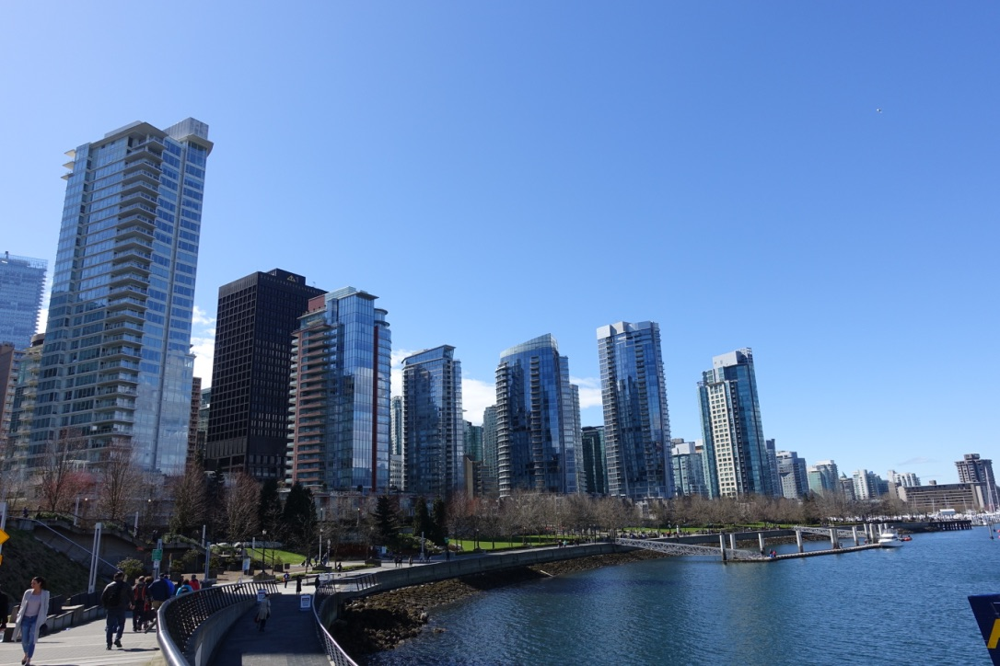
Apartment buildings near Canada Place

View of the Canadian Rocky Mountain
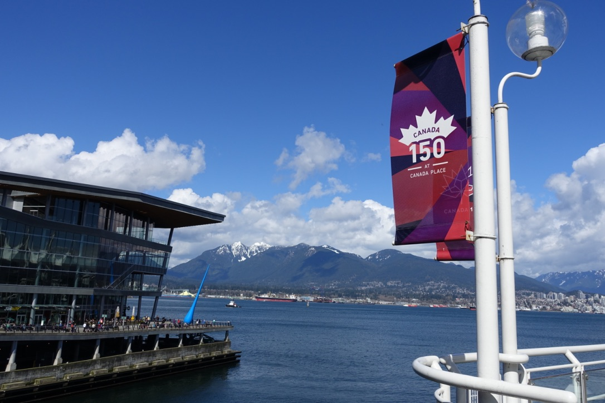
Next, I headed up north to visit the beautiful Standley Park, one of the largest metropolitan parks in North America. I walked 5 hours for a complete route. I highly recommend renting a bike. The view is amazing but it gets repetitive after the first hour.
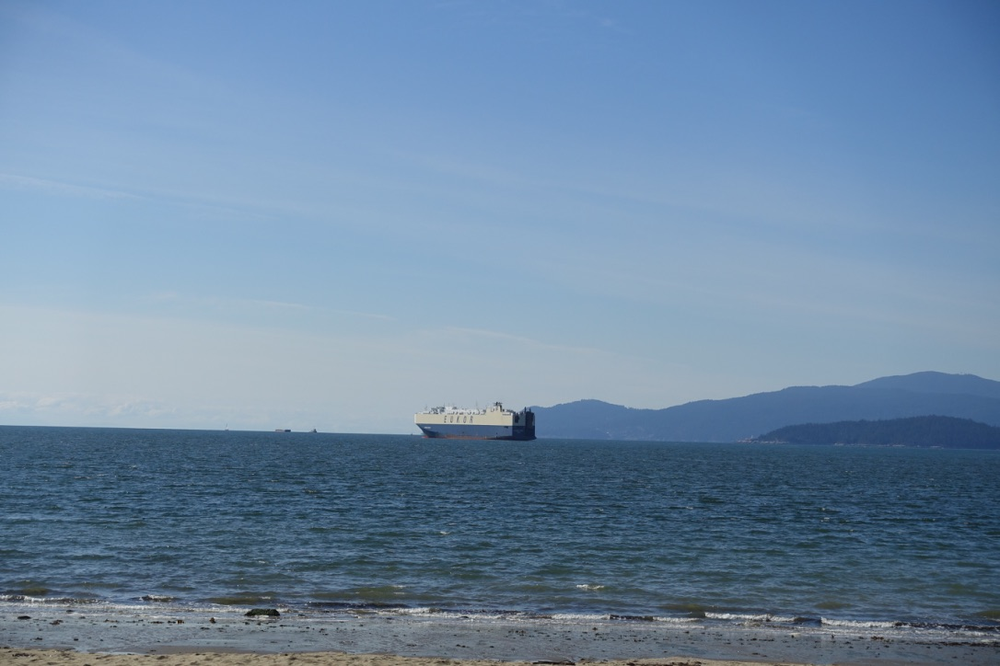
During my trip, I had to visit the US consulate for my visa interview so I did not visit one place after another. I spent half-day in Canada Place and a whole day in Standley Park (did not rent a bike). Luckily, there are several good restaurants near Standley Park after a long day of walking.
Next, I took a ferry to Granville Island. It is a fun place with shops for snacks and souvenirs. Coming from the US, I did not find the merchandise there particularly interesting.
My next stop was Capilano Provincial Park. It is outside of the city; you can take a bus or a taxi to get there. The park is well-maintained and the gardeners carefully arrange the plants to create photogenic views. There is an entrance fee (~$50?) but it is well worth it. It is a must-visit for outdoor lovers!
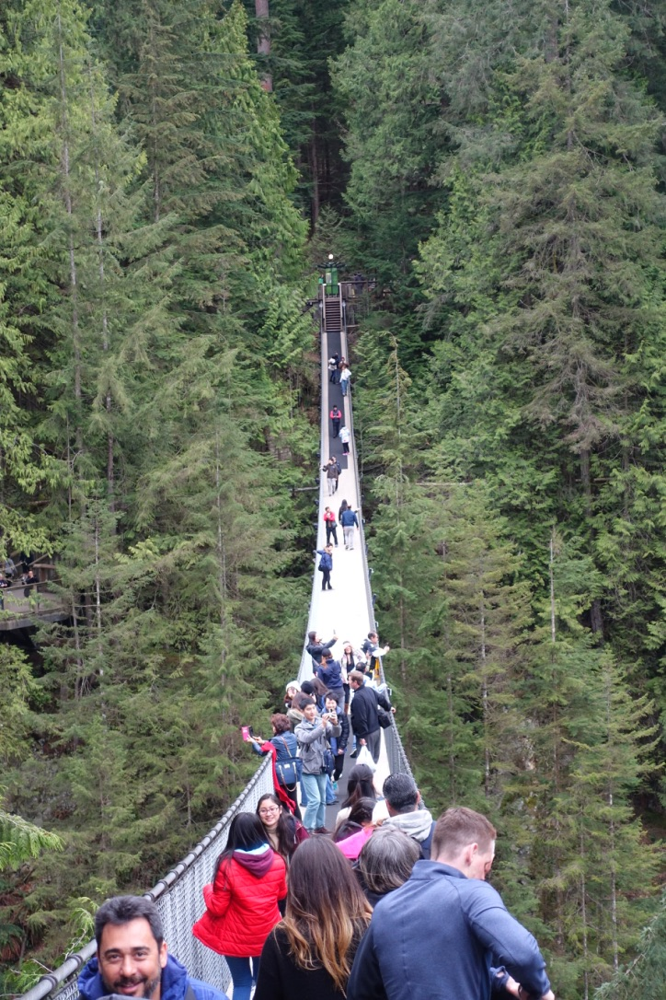

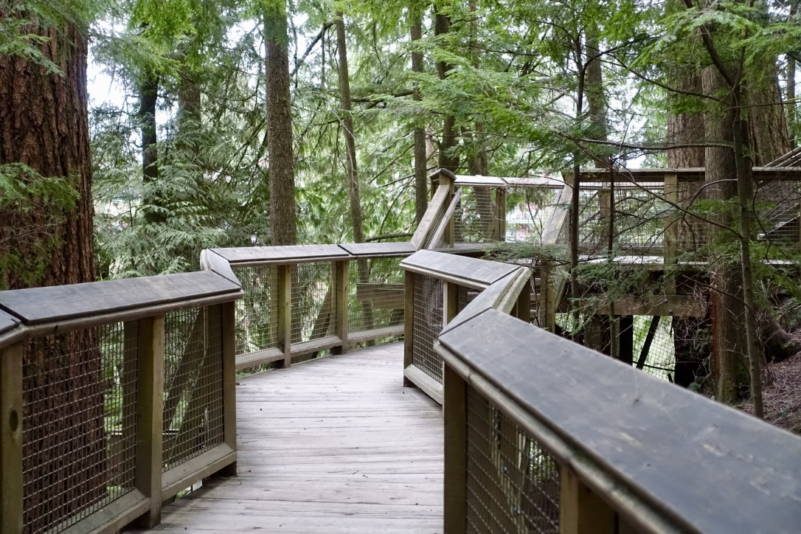
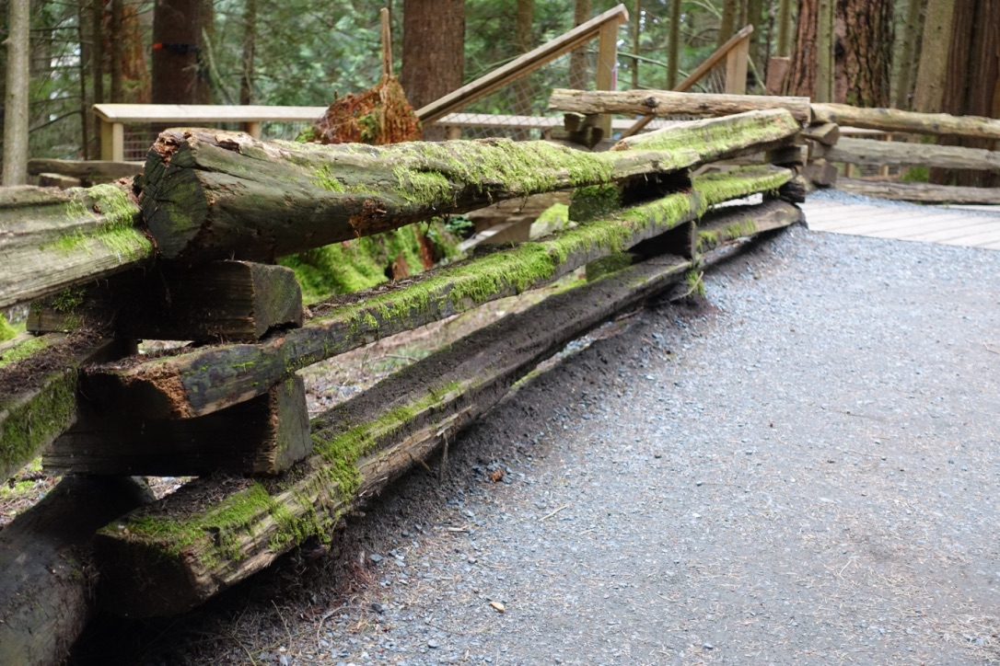
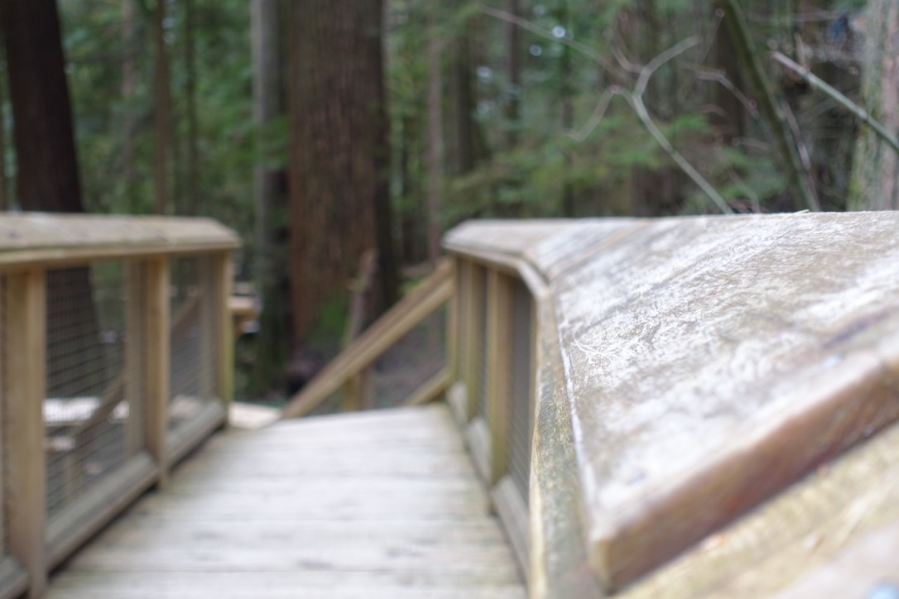
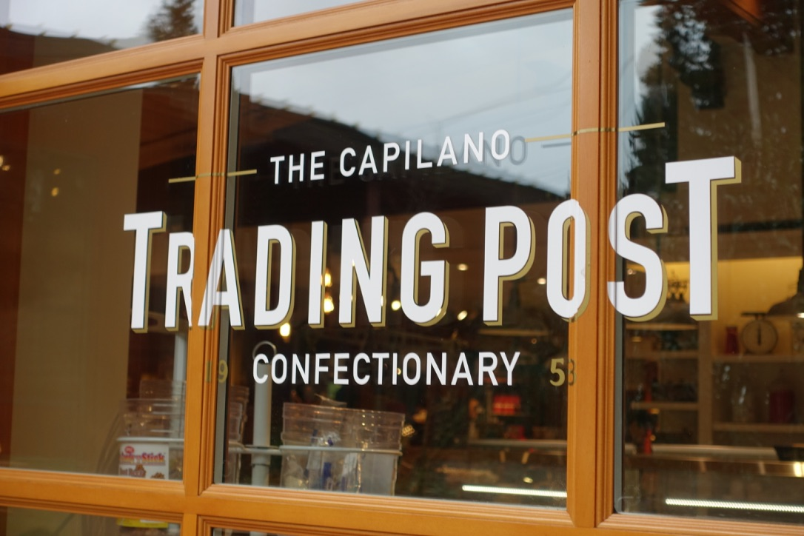
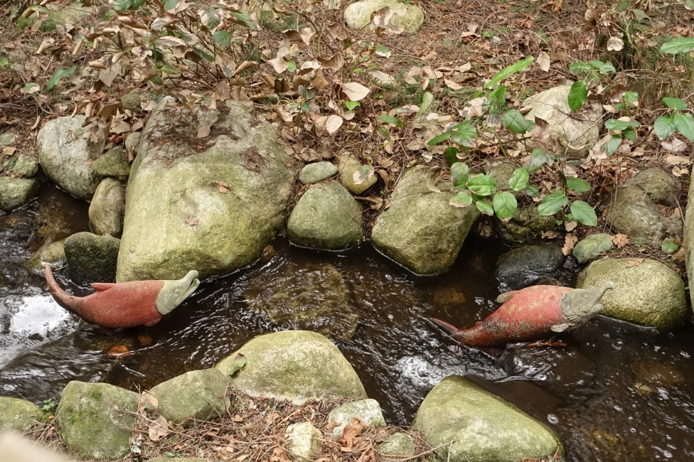
I probably spent an entire afternoon in Capilano park. There are so many spots to take beautiful photos; it is a photographer’s heaven.
For the next attraction, I headed south from Sheraton Wall Centre and visited Dr. Sun Yat-Sen Classical Chinese Garden. Being a Chinese, I have visited many classical Chinese gardens in southern China. Dr. Sun Yat-Sen’s Garden closely resembles the scholar gardens I saw in Hangzhou and Suzhou, China. I was impressed to see such a classical Chinese building outside of China. The entrance fee is quite cheap. I suggest spend an hour or two in this location.
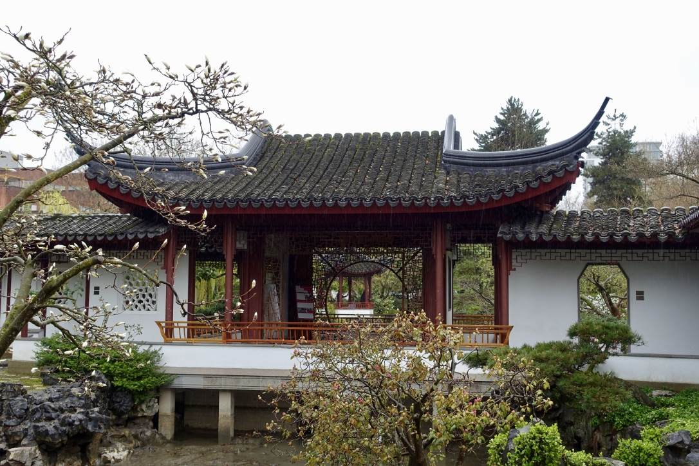
I also visited University of British Columbia and Queen Elizabeth’s park. Both are nice and worth a visit if you have time.
At the end of this blog, I want to tell you my favorite place in Vancouver and how I found it. I was heading to the shopping district, and stumbled upon an old-looking bookstore. Looking through the glass windows, my first impression was the magical bookstore Flourish & Blotts from Diagon Alley (Harry Potter). I am a big fun of old books, and I had to go in. It is a quiet bookstore without many people around. There are books on the shelf, piled up on the floor, and locked away in the basement. I picked up my first book, turned to the first page, and it was published in 1930s. It is a book older than my grandparent! There are many books older than 100 years in that store. I bought a set of History of England by James Anthony Froude. The name of the bookstore is MacLeod’s Books.
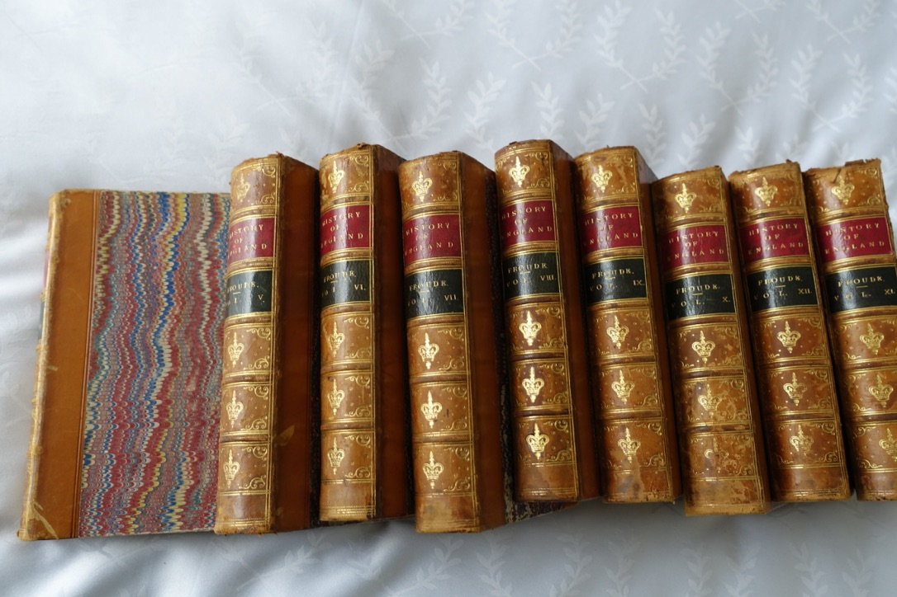
At last, I want to share some beautiful views from my hotel room at Sheraton Wall Centre. Thank you for reading!
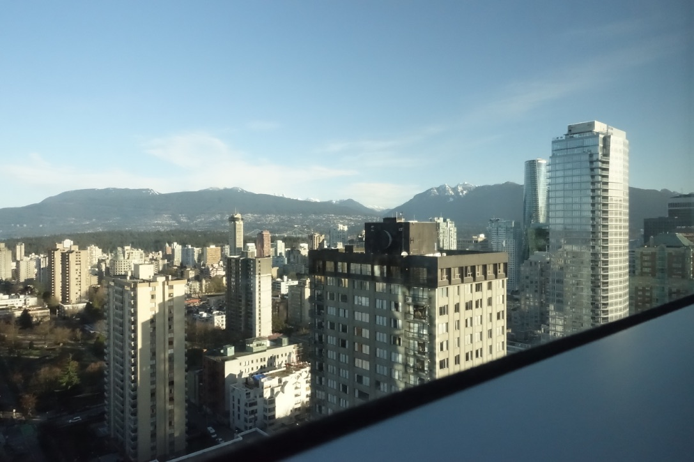
 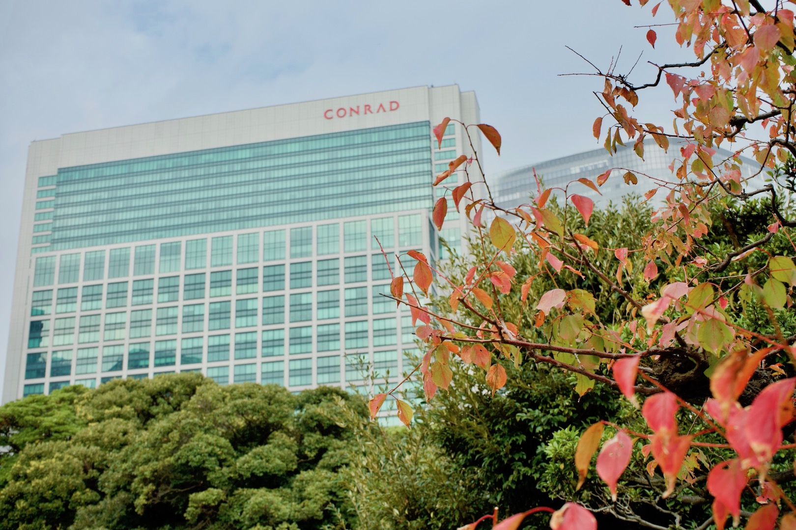
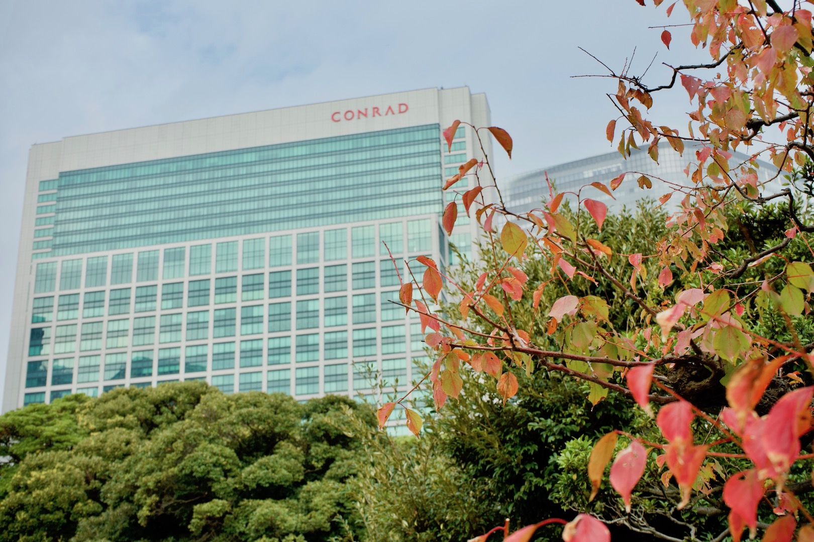